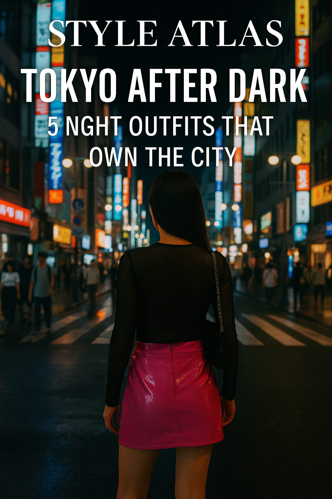
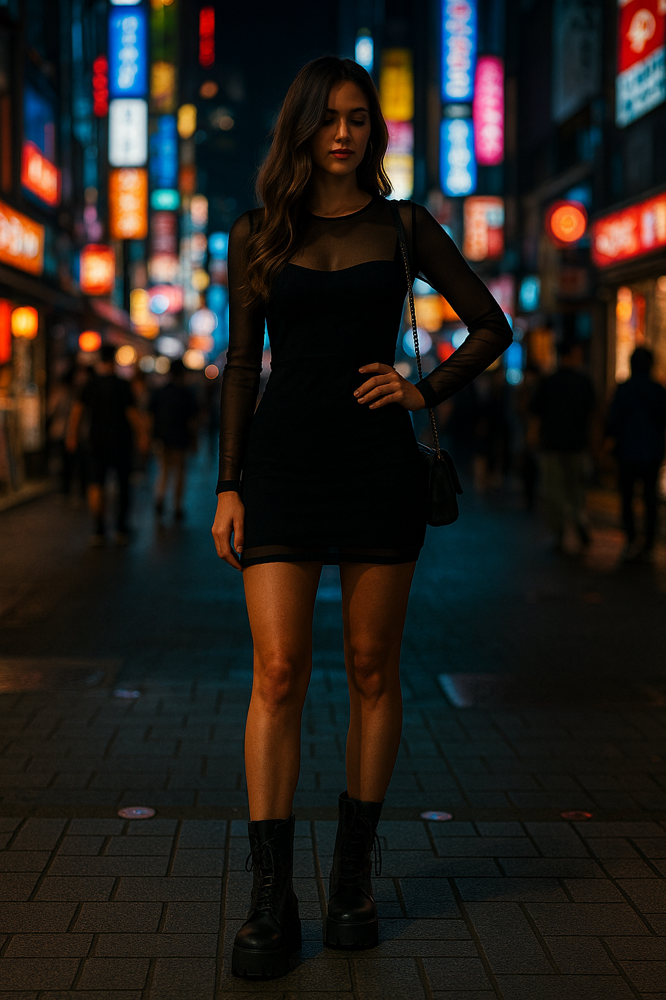
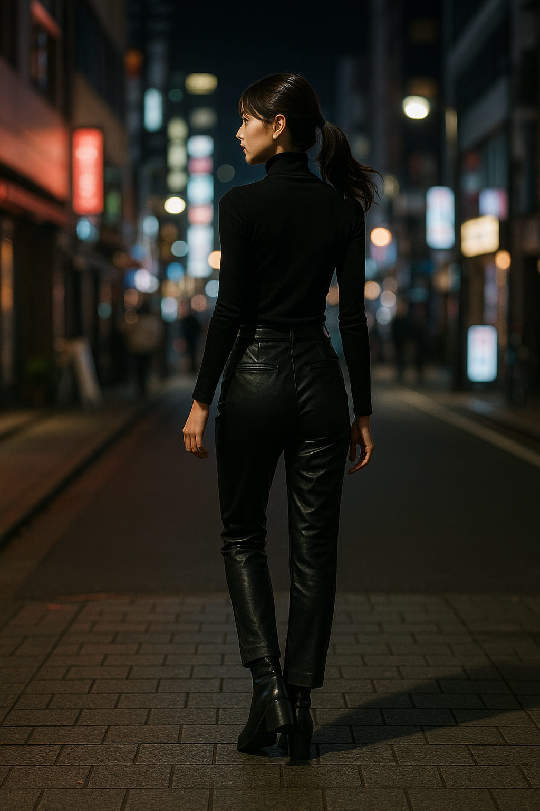

Tokyo After Dark: 5 Night Outfits That Own the City
In the city where neon lights reflect off wet pavement and fashion spills out of clubs like perfume, Tokyo at night isn’t a destination — it’s a transformation.
This is a city that reinvents itself after dark. When the sun disappears behind skyscrapers, the dress code shifts into something more fearless, more fluid, and utterly unforgettable. From Shibuya’s chaos to the elegance of Ginza rooftops, every district has its style, and every outfit has a purpose.
“In Tokyo, fashion doesn’t whisper at night. It screams — with precision.”
Let’s walk through five outfits that don’t just blend in with Tokyo’s nightlife — they dominate it.
1. The Neon Vinyl Mini in Shibuya
The look? Unapologetically loud. A hot pink vinyl mini skirt paired with a black mesh top and chunky sneakers. Maybe a chrome crossbody bag. Maybe a face gem — because why not?
The setting? Shibuya Crossing. The city’s most photogenic chaos.
The attitude? Untouchable.
This is what you wear when you want to reflect light and deflect drama. The neon signs bounce off your outfit like a second skin. People don’t look — they pause.
“Tokyo doesn’t need your modesty. It needs your movement.”
2. The Oversized Blazer + Bare Skin Look
Step into Harajuku and you’ll see it: oversized men’s blazers styled as dresses, cinched at the waist with leather belts. Nothing underneath except maybe bike shorts and sheer tights.
Add square-toe heels. A single silver earring. Wet-look hair.
It’s sharp. Androgynous. Sexy without being obvious. The power of this outfit is what it doesn’t say. And Tokyo understands that.
This look owns gallery openings, basement clubs, and the corridor between two mirrors in a Roppongi hotel lobby.
3. The Mesh Bodycon and Platform Boots
Welcome to the club scene.
A black bodycon dress with mesh paneling and strategic cutouts. Platform boots that feel like a weapon. Eyes lined in metallics. Lip gloss like armor.
This outfit doesn’t dance — it controls the room. You don’t wait at the bar. You lean on it like you own it.
It’s not just about curves. It’s about presence. It’s about walking through Akihabara and making the LED billboards feel outdated.
4. The Satin Kimono Jacket Over Streetwear
Now we pivot to something softer — but still deadly.
A satin kimono-style jacket, embroidered or printed with cranes, layered over an all-black streetwear base: crop top, wide-leg cargo pants, Y2K sneakers.
You’re not dressing up. You’re curating energy.
You’ll find this look in Daikanyama cafes or on the backs of creatives in Nakameguro bars. It says: “I could be in a Vogue spread — or behind the camera.”
Add layered necklaces, a red eye flick, and headphones you don’t need. Just vibes.
5. The All-Black Power Play in Roppongi
Tokyo after midnight demands precision. And this outfit delivers.
All black: fitted turtleneck, faux leather pants, ankle boots. Everything matte — except the attitude.
This is what you wear to rooftop lounges, hotel bars, and late-night ramen spots that only locals know. It’s sleek. It’s sharp. And when someone says “nice outfit,” you nod like it’s obvious.
The power in this look isn’t just in the clothes. It’s in the posture. The silence between steps. The fact that no one can tell if you’re arriving — or leaving.
Final Thoughts: Let the Night Dress You
Tokyo doesn’t wait for you to figure out your aesthetic. It demands a decision. And after dark, that decision better be bold.
Whether you’re glowing in vinyl, slicing silence in an all-black silhouette, or layering tradition over rebellion — every outfit in Tokyo is a conversation with the night.
So let the city see you. Let your clothes speak first. And walk like the street owes you something.
Because in Tokyo, it probably does.
Published: 2025-05-17